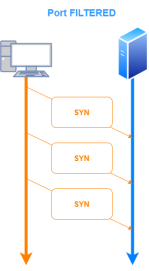
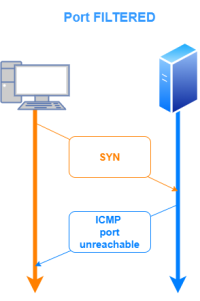

TCP
• Client send packet with SYN flag enabled
• Server responds:
◇ SYN+ACK → port
open Usually the flags SYN+ACK are abbreviated as
SA hping3 –S 192.168.0.97 -p 80 #-S option is because we send SYN packets
◇ RST+ACK → port
closed or
firewalled Usually the flags RST+ACK are abbreviated as
RA hping3 –S 192.168.0.142 -p 80 #-S option is because we send SYN packets
◇ No response → port
filtered (probably nothing listening)
filtered means that nmap is not sure of the exact state of the port because nmap after several attempts will
don't get response or if nmap get a response of type
ICMP unreachable error.
In all likelihood, there is nothing listening on the end system, probably IDS or a firewall is blocking our inbound SYN packet (again, silently rejecting it).
 ◇ ICMP port Unreacheable → port
filtered (probably because it is blocked by a firewall that is creating the ICMP message.)
If the message is coming from the target machine, a local firewall (such as IPtables) on the machine is likely formulating the ICMP packet. Nmap marks this status as "filtered".
 .png){kind=link}
{kind=link}